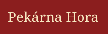
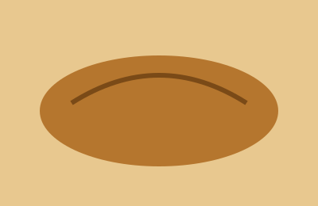
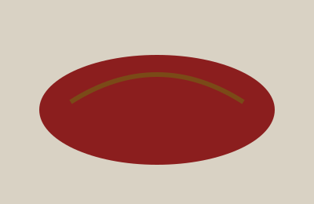

 |
Úvod | O nás | Kontakt | Facebook |
Vítejte na stránkách Pekárny Hora!!!
 |
Čerstvé pečivo každé ráno
Pečeme v Brně od roku 1994. Každý den od čtyř hodin ráno pro vás připravujeme kváskový chléb, rohlíky, koláče a sezónní pečivo podle receptů, které jsme si přivezli od babičky z Vysočiny. Používáme mouku z mlýna v Předklášteří a žádné zlepšováky. Chléb necháváme kynout přes noc, aby měl hutnou střídu a křupavou kůrku, kterou si naši zákazníci tolik oblíbili. Na objednávku pečeme svatební koláčky a dorty.
Objednat koláčky
|
Naše nabídka
- Kváskový chléb 1 kg
- Rohlíky a housky
- Svatební koláčky na objednávku
- Vánoční cukroví

Nejlepší chleba v Brně, chodíme sem už dvacet let. – paní Novotná
|
|